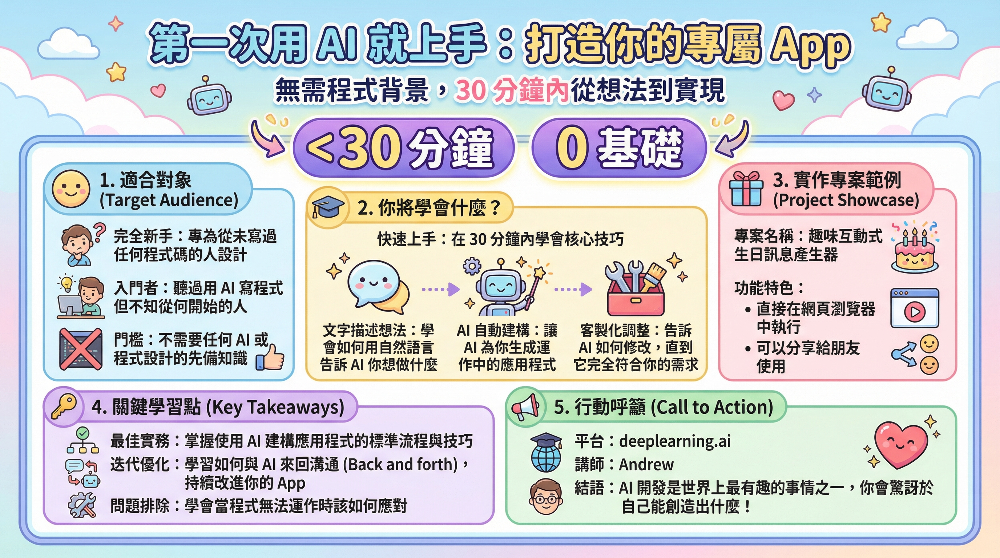

A. 基本資訊
- 演講標題： 從文字到應用：AI 驅動的無程式碼網頁開發實踐
- 講者： Andrew (深度學習.AI 創辦人，具備 AI 與程式設計教育背景)
- 時間地點： [演講時間與地點資訊未提供]
- 核心關鍵字： AI 網頁開發, 無程式碼, 快速原型, 互動式應用, 需求描述, AI 協作, 程式設計入門, 學習曲線, 深度學習.AI, 創意實現
- 演講背景： 針對沒有程式設計或 AI 基礎的初學者，介紹如何利用 AI 工具，在極短時間內將文字描述的概念轉化為可互動的網頁應用，強調 AI 在降低技術門檻、加速創意實現方面的潛力。
B. 核心思想提煉 💎
思想精華（3-5 句）
AI 將以前所未有的方式 democratize (普及化) 軟體開發，使「想法」成為唯一的限制，而非技術能力。
透過自然語言與 AI 的迭代互動，開發者（即使是新手）也能實現複雜的應用原型，並精準控制最終成果。
AI 輔助開發不僅是技術工具，更是一種全新的協作模式，需要學習如何有效地溝通、驗證與迭代。
關鍵引言（5-8 句）
「In less than 30 minutes, I'll show you how to describe an idea in words and let AI build it for you.」
- 分析：這是演講最核心的承諾，直接點出 AI 轉化想法到應用的速度與效率，強調「文字描述」即是開發的起點，大幅降低了入門門檻。
「A funny interactive birthday message generator that runs in your web browser and that you can share with friends.」
- 分析：透過一個具體、有趣的案例（生日訊息產生器），具體化了 AI 的應用場景，使其更貼近生活，更容易被聽眾理解和想像，同時也暗示了應用的社交與分享屬性。
「Then you also customize it by telling AI how you want it changed so you can tweak it until it works exactly how you want.」
- 分析：突顯了 AI 開發的「迭代」和「客製化」特性，這與傳統程式開發的修改過程不同，它強調了與 AI 的「對話式」協作，用戶可以持續提供反饋，直到滿意為止。
「This course assumes no prior knowledge of AI or coding.」
- 分析：再次強調了目標聽眾的廣泛性，直接打消了初學者對「不會寫程式」、「不懂 AI」的顧慮，是極具吸引力的「破框」說法。
「You also learn the most important best practices for building with AI, such as how to go back and forth with AI to improve your app or what to do when things don't work.」
- 分析：這點至關重要，它表明 AI 輔助開發並非「一次性」的指令輸出，而是需要一套新的「工作方法」與「最佳實踐」，包括如何有效溝通、處理錯誤，這為聽眾提供了持續學習和深入應用的方向。
「Building with AI is one of the most fun things in the world.」
- 分析：以極具感染力的語氣，傳達了 AI 開發的樂趣與潛力，將技術學習與「樂趣」連結，激發聽眾的興趣和動機，這是教育者常用的強大激勵手段。
「Please join me at deep learning.ai and take your first step on this exciting journey.」
- 分析：這是明確的行動呼籲，邀請聽眾參與到這個新的學習旅程中，並將平台 (deep learning.ai) 與「令人興奮的旅程」連結，營造一種社群感和參與感。
C. 內容摘要與結構分析
演講主旨（3-5 句）
本演講的核心主旨是向零基礎的聽眾展示，如何透過 AI 工具，在極短時間內將創意想法轉化為可運行的網頁應用。演講者 Andrew 強調，AI 的出現正在徹底改變軟體開發的門檻，讓「描述能力」取代「編碼能力」成為核心，並將透過一個具體的案例，引導聽眾體驗這種全新的開發模式。此外，演講也包含了與 AI 協作的關鍵實踐方法，鼓勵聽眾加入 deep learning.ai 的社群，一同探索 AI 開發的樂趣與潛力。
關鍵論點與論據（聚焦核心）
-
論點一：AI 實現「想法即應用」的低門檻開發
- 核心論述：傳統軟體開發需要深厚的程式設計知識，但 AI 的進步，特別是自然語言處理能力，使得用戶僅需用文字描述需求，AI 即可生成可運行的應用。這極大程度地降低了技術門檻，讓更多人能夠實現創意。
- 思考路徑與問題意識（問題導向）：
- 講者試圖解決什麼問題？：許多人腦中有創新的想法，但受限於技術能力，無法將其付諸實踐；傳統程式學習曲線陡峭，令人卻步。
- 為何選擇這個論點？：這是 AI 輔助開發最根本的變革，直接回應了「技術與創意的鴻溝」這一痛點。
- 關鍵轉折是什麼？：AI 從一個「輔助工具」轉變為一個「協作者」或「自動化開發者」，讓「描述」成為核心技能。
- 支持論據：
- 論據 1：演講者承諾「30 分鐘內」展示如何將「文字描述」轉化為 AI 應用。
- 論據 2：明確指出課程「假設 no prior knowledge of AI or coding」（假設沒有 AI 或程式設計的預先知識）。
- 關鍵引言：
> 「In less than 30 minutes, I'll show you how to describe an idea in words and let AI build it for you.」
> 「This course assumes no prior knowledge of AI or coding.」
- 深度分析：此論點預示著未來軟體開發的「民主化」，將加速原型設計與概念驗證的速度，可能催生大量小型、一次性或高度客製化的應用。對於台灣產業而言，這意味著中小企業甚至個人，都有機會以更低的成本和時間，將商業想法轉化為數位產品，提升市場競爭力。
-
論點二：AI 協作與迭代是實現精準應用價值的關鍵
- 核心論述：AI 生成的應用並非一蹴可幾，真正的價值在於透過與 AI 的持續「來回溝通」（go back and forth），不斷調整和優化，直到應用完全符合用戶的預期。這是一種全新的「協作」模式，需要用戶掌握有效的溝通策略。
- 思考路徑與問題意識（問題導向）：
- 講者試圖解決什麼問題？：AI 生成的初版應用可能不完美，使用者需要知道如何「指揮」AI 進行修改，而不是僅僅接受結果。
- 為何選擇這個論點？：這是區分「AI 應用生成」與「AI 驅動的精準開發」的關鍵，點出 AI 開發的「可控性」與「使用者中心」的價值。
- 關鍵轉折是什麼？：從單向的「生成」轉變為雙向的「互動」與「精煉」。
- 支持論據：
- 論據 1：講到「customize it by telling AI how you want it changed so you can tweak it until it works exactly how you want.」
- 論據 2：提及「best practices for building with AI, such as how to go back and forth with AI to improve your app or what to do when things don't work.」
- 深度分析：這點對於台灣產業的轉型至關重要。過去，企業可能依賴外包或聘請昂貴的開發團隊來客製化軟體。現在，AI 提供了另一種途徑：企業內部人員（即使非技術背景）也能透過與 AI 的對話，逐步打磨出符合業務流程的應用。這尤其適用於需要快速響應市場變化的中小企業，或是尋求內部效率優化的製造業。學習「如何與 AI 有效溝通」將成為未來職場的一項重要軟技能。
-
論點三：AI 開發的樂趣與學習動機
- 核心論述：AI 輔助開發不僅技術上可行，更是一項充滿樂趣的體驗，能夠激發人們的學習熱情和創造力。透過將想法迅速轉化為可見、可用的應用，可以帶來極大的成就感。
- 思考路徑與問題意識（問題導向）：
- 講者試圖解決什麼問題？：如何讓初學者克服對技術的恐懼，主動學習並投入 AI 開發。
- 為何選擇這個論點？：情感連結是推動學習的強大驅動力。將技術學習描繪成「有趣」的過程，能有效降低聽眾的抗拒感。
- 關鍵轉折是什麼？：將 AI 開發從「艱深任務」轉變為「遊戲化」或「創作體驗」。
- 支持論據：
- 論據 1：用「A funny interactive birthday message generator」這樣有趣且具體的例子。
- 論據 2：講者明確表示「Building with AI is one of the most fun things in the world.」
- 深度分析：這種「樂趣導向」的學習方式，非常適合台灣「高教」與「職訓」的結合。透過有趣的專案，可以吸引更多年輕人或轉職者投入 AI 相關領域，緩解了台灣科技人才的結構性短缺。同時，對於已經在職的專業人士，也能透過此類樂趣化的體驗，重新燃起對新技術的好奇心，進一步深化其專業技能。
專業術語解析（標準版）
| 術語 |
完整定義 |
在演講中的意義 |
| AI (Artificial Intelligence) |
人工智慧，模擬人類智慧過程的計算機系統，包括學習、解決問題、感知、語言理解等。 |
演講的核心工具，能夠理解自然語言指令，並生成可運行的網頁應用。 |
| Web Application |
在網頁瀏覽器中運行的軟體應用程式，通常透過網際網路訪問。 |
演講者利用 AI 構建的具體產物，強調其互動性、可分享性以及在瀏覽器中直接運行的便利性。 |
| No-Code / Low-Code Development |
指允許用戶在幾乎不寫程式碼（No-Code）或僅需少量程式碼（Low-Code）的情況下，創建應用程式的開發模式。 |
演講者所推廣的開發範式，AI 驅動的開發本質上就是一種極致的 Low-Code/No-Code 形式，將自然語言指令作為主要開發方式。 |
| Prompt Engineering |
指設計和優化用於 AI 模型（尤其是大型語言模型）的輸入指令（prompt），以獲得期望輸出的一門藝術與科學。 |
雖然演講者未直接使用此術語，但「describe an idea in words」、「telling AI how you want it changed」、「go back and forth with AI」都隱含了 prompt engineering 的概念，強調有效溝通和迭代調整對 AI 輸出的重要性。 |
| Iterative Development |
指軟體開發過程中，透過不斷的循環（設計、開發、測試、修改）來逐步完善產品的開發方法。 |
演講者強調的「tweak it until it works exactly how you want」和「go back and forth with AI」即是 AI 驅動下的迭代開發，與傳統的敏捷開發有異曲同工之妙，但互動方式更為直接。 |
| Deep Learning |
機器學習的一個分支，模仿人腦神經網絡結構，透過大量數據訓練複雜的模型。 |
演講者所屬的機構 (deep learning.ai) 名稱，也暗示了演講中所使用的 AI 技術很可能基於深度學習的進階模型，例如大型語言模型 (LLMs)。 |
| Best Practices |
在特定領域中，被廣泛認可為最有效、最可靠的方法、技巧或原則。 |
演講者承諾教授的內容，特別是關於如何與 AI 有效協作，例如如何進行反覆溝通和處理問題，這點對於學習者理解 AI 開發的「眉角」至關重要。 |
D. 實務應用與案例解析
實務案例分析（聚焦重點）
- 案例一：有趣且互動的生日訊息產生器
- 情境背景：聽眾可能想要製作一個獨特的生日祝福方式，或是需要一個簡單的互動式網頁與朋友分享。
- 問題核心：如何快速、低門檻地創建一個具有個人化、互動性和分享性的網頁應用，而無需具備程式設計背景。
- 解決方案：
- 透過文字描述向 AI 指定應用功能：「一個有趣的、互動式的生日訊息產生器」。
- AI 根據描述生成可運行的網頁應用代碼。
- 用戶可以進一步與 AI 溝通，進行客製化修改，例如改變訊息內容、字體、顏色、加入圖片或音效等，直到完全符合個人期望。
- 最終生成一個可以在網頁瀏覽器中運行，並可分享給朋友的應用。
- 成果數據：
- 開發時間：在 30 分鐘內完成。
- 可分享性：生成的應用可以透過連結分享。
- 互動性：應用內建互動機制。
- 客製化程度：可根據使用者意願進行精確調整。
- 關鍵洞見：
- AI 能夠精準理解並實現具體的、即使是帶有情感色彩（funny）的創意需求。
- 「描述」和「迭代」是實現高品質 AI 應用的核心能力。
- 這種方法能將技術實現的門檻，從「程式碼編寫」轉移到「清晰的語言表達」和「有效的溝通協調」。
- 批判分析：
- 此案例是入門級別的展示，對於更複雜的後端邏輯、數據庫交互、複雜的 UI/UX 設計，AI 的生成能力與精確度可能面臨挑戰。
- 「30 分鐘」可能是一種理想化的展示，實際操作中，溝通的效率、AI 的理解能力，以及迭代次數都會影響最終時間。
- 「分享」功能暗示了潛在的部署需求，但演講中未詳述如何將生成的應用部署到線上。
技術/工具/方法論（簡要說明）
- AI 驅動的開發平台：
- 簡述：一個能接收自然語言指令，並自動生成網頁應用程式代碼的軟體系統。
- 應用場景：快速原型設計、概念驗證 (PoC)、教育訓練、個人創意實現。
- 優缺點：
- 優點：極低的技術門檻，開發速度快，適合非技術人員。
- 缺點：可能在複雜性、效能、安全性、客製化深度上有限制，依賴於 AI 模型本身的理解與生成能力。
- 對話式 AI 協作：
- 簡述：透過自然語言與 AI 進行多輪對話，逐步定義、修改和完善應用程式。
- 應用場景：客製化 AI 生成的應用、排除錯誤、優化功能。
- 優缺點：
- 優點：直觀、靈活，易於學習；能滿足高度個人化的需求。
- 缺點：需要清晰的表達能力和迭代思維；AI 有時可能產生誤解，需要反覆溝通。
- 無程式碼 (No-Code) 開發思維：
- 簡述：專注於「我要什麼」而非「如何實現」，將技術細節交給平台處理。
- 應用場景：快速構建標準化流程、內部工具、簡易網站。
- 優缺點：
- 優點：大幅縮短開發週期，降低成本，賦予業務人員更大自主權。
- 缺點：靈活性受限於平台提供的組件和功能，難以實現高度創新的複雜邏輯。
經驗與教訓
- ✅ 成功要素 1：清晰、具體的「文字描述」是與 AI 溝通的基礎。
- ✅ 成功要素 2：保持「迭代、反覆」的溝通與調整，是確保 AI 應用符合預期的關鍵。
- ⚠️ 常見陷阱 1：過於模糊或籠統的需求描述，可能導致 AI 生成的結果不符預期。
- ⚠️ 常見陷阱 2：將 AI 視為「黑箱」，不進行後續溝通與驗證，可能錯失精準客製化的機會。
E. 深度洞察與反思 🔍
未來趨勢與跨域連結（深度分析）
趨勢 1：開發者角色的轉變：從「編碼者」到「協作者/指揮者」
* 講者觀點：AI 將取代大部分基礎的程式碼編寫工作，開發者需要學習如何與 AI 協同工作，將精力集中在更高層次的架構設計、需求定義、AI 模型訓練與優化、以及終端使用者體驗上。
* 深度分析：這預示著軟體工程領域的重大變革。未來的軟體工程師需要具備更強的問題分析、系統設計、以及與 AI 溝通協調的能力。這股趨勢將會影響軟體工程教育的重點，從語法學習轉向邏輯思維、架構設計與 AI 互動技巧。對於台灣的科技人才培育，需要及早介入，培養具備「AI 協作」能力的下一代工程師。
* 潛在影響：軟體開發效率將指數級提升，技術門檻大幅降低，更多非技術背景的人才將進入軟體開發領域。
趨勢 2：AI 驅動的「創意經濟」的加速
* 講者觀點：AI 的易用性將釋放出大量個體的創意潛力，使得「一個好的想法」成為最有價值的資產。
* 深度分析：當構建應用工具變得普及且易於使用時，創新的速度將大大加快。個人、小型團隊甚至學生，都有可能以前所未有的速度將創新的商業模式、服務或產品原型推向市場。這將促進「長尾市場」的發展，出現更多專注於特定小眾需求的微型應用。台灣的優勢在於其靈活的產業生態和創意人才，應能抓住此趨勢，鼓勵更多「點子創業者」。
* 潛在影響：新創生態更趨活躍，市場細分更為明顯，個人 IP 的價值將提升。
跨域連結：
1. 連結領域 1：教育與技能再培訓
* AI 輔助開發的出現，意味著傳統程式設計教育需要轉型。教育機構和企業應積極開發「AI 協作」與「提示工程」等新課程，並提供技能再培訓計畫，幫助現有勞動力適應新的開發模式。這對台灣發展「終身學習」和「產業升級」具有重要意義。
2. 連結領域 2：內容創作與個人品牌
* 演講者使用的「有趣、互動式生日訊息產生器」範例，說明了 AI 可以被用於創建各種有趣的內容和互動體驗。這將極大豐富數位內容創作的工具箱，從而助推個人品牌、社群媒體互動、以及教育內容的創新。
批判性思考（深度剖析）
潛在限制與盲點
-
限制 1：AI 對複雜邏輯和非標準化流程的理解與生成能力
- 為何是限制：雖然 AI 在生成簡單應用方面表現出色，但對於涉及複雜數據庫操作、嚴謹的後端邏輯、或是高度客製化的業務流程，AI 的生成代碼可能存在錯誤、效率低下或安全隱患。
- 潛在風險：依賴 AI 進行複雜系統開發，可能會導致開發週期延遲，甚至產品失敗，尤其是在金融、醫療、工業自動化等對穩定性和安全性要求極高的領域。
-
限制 2：對「最佳實踐」的依賴性與 AI 的「幻覺」問題
- 為何是限制：演講者提到了「best practices」，但 AI 的「最佳實踐」是否真正符合行業標準，以及 AI 模型可能出現的「幻覺」（hallucinations）——生成看似合理但實際錯誤的資訊或代碼，都是潛在的挑戰。
- 潛在風險：初學者可能難以辨別 AI 生成內容的真偽與品質，若無足夠的驗證機制，可能導致不良後果。
未提及但重要的觀點
- AI 模型的透明度與可解釋性：演講者未深入探討 AI 生成的程式碼是如何產生的，這對於除錯、優化和信任建立至關重要。
- 知識產權與版權問題：AI 生成的代碼是否受版權保護？其訓練數據的版權問題如何解決？這些是未來發展中必須面對的法律與倫理議題。
- AI 輔助開發的生態系統建設：除了單一工具，一個完整的 AI 開發生態系統（如版本控制、部署工具、測試框架等）的整合是推動廣泛採用的關鍵。
反向思考
如果 AI 生成的應用，其代碼品質始終不如人工編寫，且在複雜度和安全性上有根本性限制，那麼這個「無程式碼」的發展方向是否會走向瓶頸？
【推論】若此種情況發生，AI 將更多地退化為「低程式碼」的輔助角色，即協助生成基礎框架、重複性代碼片段，但核心邏輯仍需人工編寫。這將促使開發者更專注於「如何與 AI 高效協作」，而不是完全取代程式設計師。台灣產業在這類「人機協作」模式下，反而可能找到新的競爭優勢，因為其靈活性和對細節的把控能力是 AI 短期內難以企及的。
F. 個人啟發與行動方案 🚀
思維啟發（深度反思）
- 啟發 1：技術門檻的終極瓦解：AI 讓我意識到，未來絕大多數的「創意」都可以透過「表達」而非「編寫」來實現，這極大地拓展了創新的可能性邊界。
- 啟發 2：「與 AI 對話」將成為一項核心技能：我需要學習如何清晰、精確地向 AI 傳達需求，並具備持續迭代、驗證的能力，這比單純記憶程式語法更有價值。
- 啟發 3：學習曲線的重新定義：對於完全的初學者，AI 提供了一條全新的、可能更有趣、更有成就感的學習路徑，這對我理解和推動相關領域的普及教育，有著重要啟示。
行動建議（具體可執行）
-
短期行動（1-2 週）：
- [ ] 註冊並體驗：在 deep learning.ai 平台註冊，並嘗試完成演講者提到的「生日訊息產生器」課程，親身體驗從文字到應用的全過程。
- [ ] 撰寫練習提示：嘗試用不同的方式描述一個簡單的網頁功能（例如：一個個人簡介頁面、一個簡單的計算器），觀察 AI 的生成結果，並記錄下效果最好的描述方式。
- [ ] 閱讀相關資訊：搜索「AI 輔助開發」、「prompt engineering」、「no-code AI tools」等關鍵字，初步了解該領域的發展現狀和主要工具。
-
中期探索（1-3 個月）：
- [ ] 完成一個小型專案：構思一個簡單但有用的網頁應用（例如：一個待辦事項列表、一個簡單的筆記應用），利用 AI 工具完成其大部分功能，並嘗試進行客製化迭代。
- [ ] 學習提示工程技巧：系統學習如何撰寫更有效的 AI 提示詞，了解如何引導 AI 產生更精確、更符合要求的輸出，可以透過線上資源或小型課程。
- [ ] 關注台灣 AI 工具發展：留意台灣本土或與台灣產業相關的 AI 開發工具和應用案例，思考其在地化的潛力。
-
長期追蹤（3 個月以上）：
- [ ] 持續跟進 AI 開發工具的演進：定期關注主流 AI 開發平台和模型的更新，評估其對軟體開發流程的影響。
- [ ] 探索複雜應用場景：嘗試將 AI 輔助開發應用於更具挑戰性的場景，例如：參與公司內部流程優化的小型工具開發，或構建更複雜的個人項目。
- [ ] 分享學習經驗：將 AI 開發的學習心得和實踐經驗，透過部落格、社群或內部分享的方式，傳播給更多對技術感興趣的人。